작품 01 / 공간디자인 / 2026
서면의 흐름을 이어가는
스마트 버스 쉘터
부산 서면의 복잡한 이동과 짧은 기다림 사이, 도시와 사람을 연결하는 새로운 대기 공간을 제안합니다.
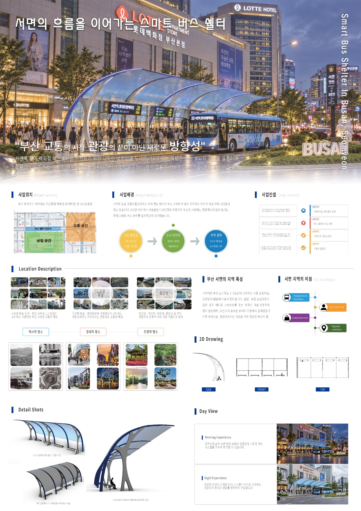
이동의 장소에서
도시를 경험하는 장소로
서면은 교통과 상업, 보행이 밀집한 부산의 중심지입니다. 이 프로젝트는 버스를 기다리는 시간을 단순한 정차의 순간이 아닌, 주변 경관과 도시의 활력을 경험하는 시간으로 바라봅니다.
판넬의 조사 내용을 바탕으로 교통 접근성, 보행 흐름, 지역의 상징성을 함께 고려하고, 보호와 개방감이 공존하는 쉘터를 계획했습니다.
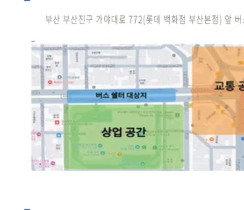
도시의 흐름을 닮은
연속적인 곡선
반복되는 아치와 얇게 뻗는 지붕이 하나의 리듬을 만들며, 정류장 전체를 연결된 공간으로 인식하게 합니다.
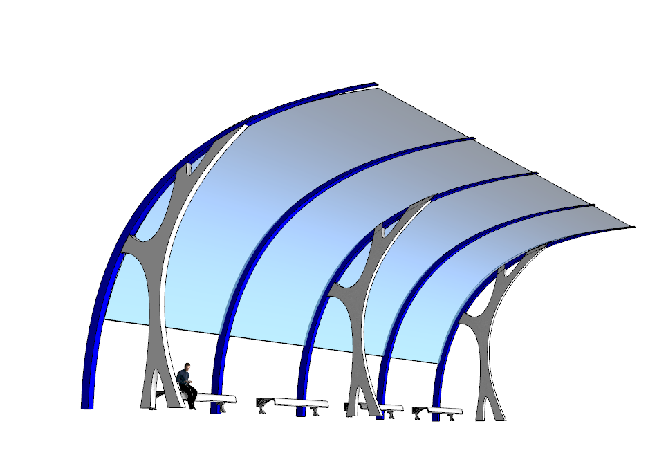
곡선형 실루엣
캐노피가 거리 방향으로 길게 이어지며 시각적 흐름을 형성합니다.
반투명 지붕
상부의 밝기와 개방감을 유지하면서 대기 영역을 구분합니다.
반복되는 구조
동일한 프레임의 연속으로 길이 방향의 질서와 통일감을 표현합니다.
형태를 지탱하는
구조 자체가 디자인이 되도록
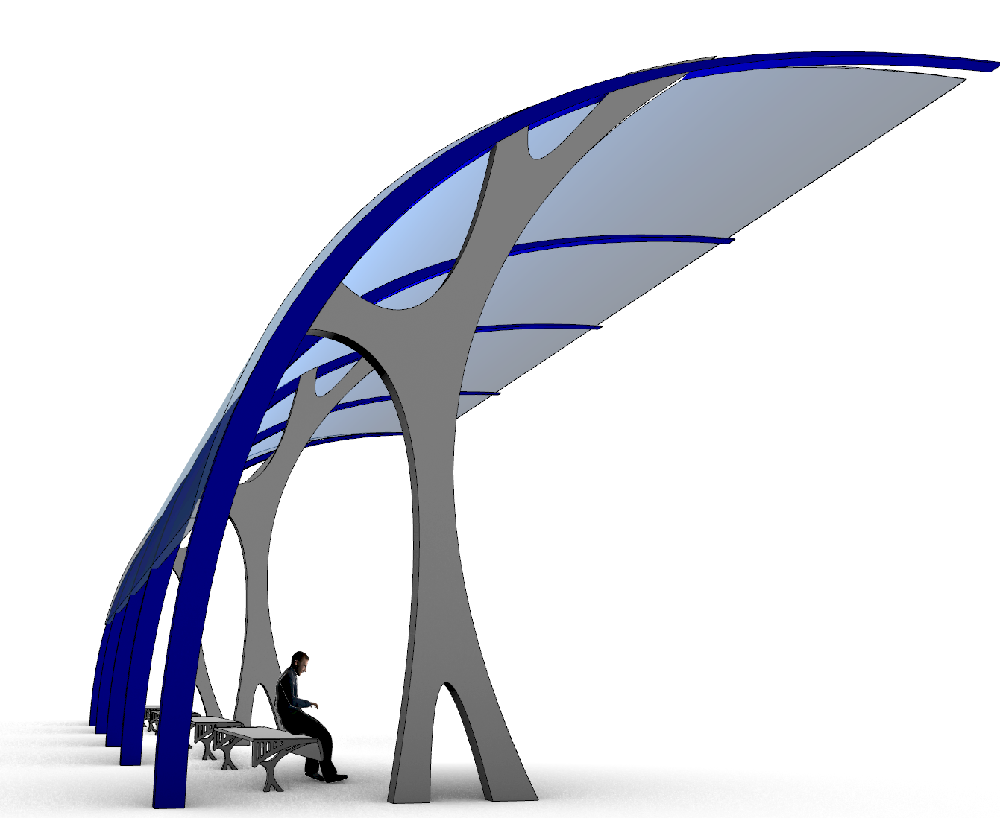
분기형 기둥과 캔틸레버형 지붕의 조형적 관계
하나의 지지 기둥이 위쪽에서 갈라지며 넓은 캐노피를 받치는 형태를 강조했습니다. 곡면의 연결과 구조 부재의 반복은 쉘터의 정체성을 만드는 중요한 요소입니다.
파란 외곽 프레임과 회색 지지 구조를 대비시켜 주요 부재의 역할이 시각적으로 드러나도록 구성했습니다.
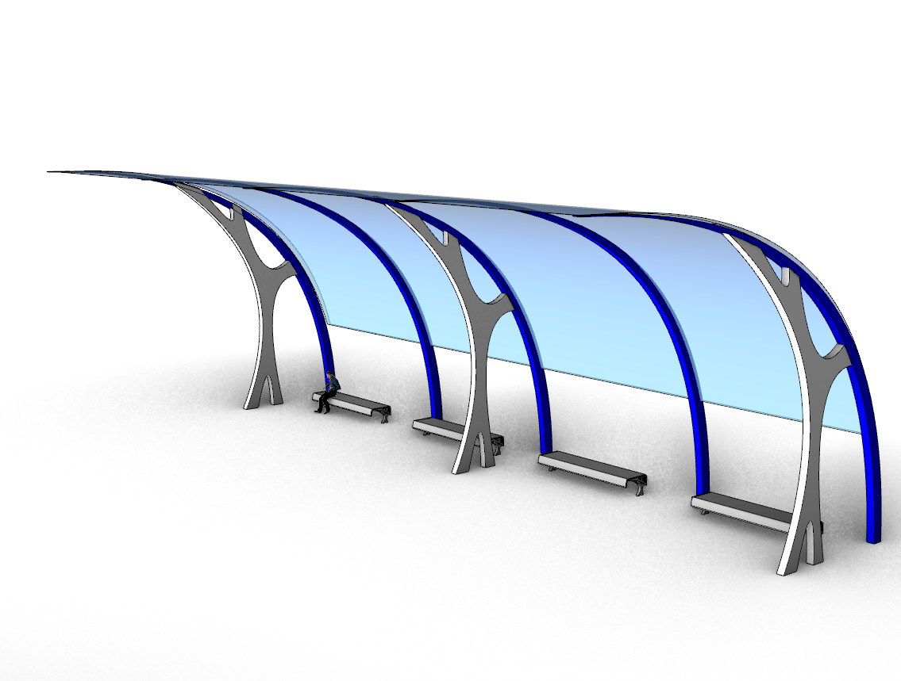
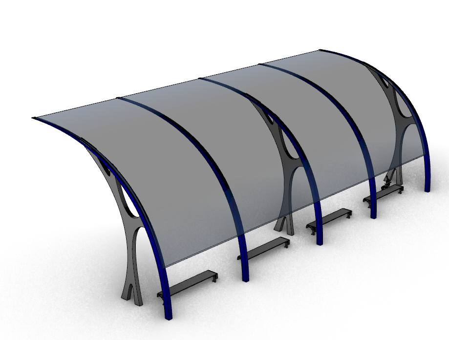
공간의 비례와
구조를 검토하다
측면, 정면, 사시 도면을 분리해 각각의 역할을 명확하게 보여줍니다.
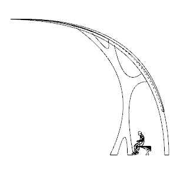
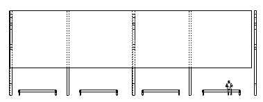
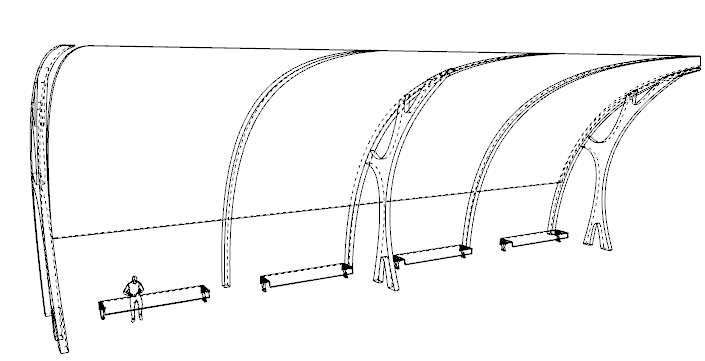
설계의 형태를
실제 공간으로 확인하다
3D 모델링으로 구체화한 쉘터를 축소 모형으로 제작해 캐노피의 곡률과 기둥의 반복, 벤치와 버스의 배치 관계를 확인했습니다. 여러 시점에서 촬영한 실제 목업 사진으로 공간의 깊이와 이용자 규모를 살펴볼 수 있습니다.
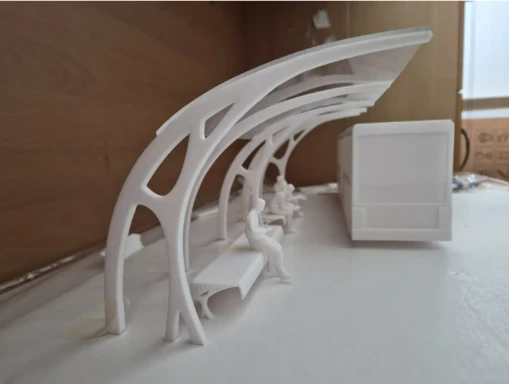
렌더링에서 실물로
얇은 지붕이 전방으로 뻗는 형태, 반복되는 아치 구조, 내부 벤치의 위치를 축소 모형으로 확인했습니다.
인물과 버스 모형을 함께 배치해 실제 이용 상황을 가늠하고, 정류장의 개방성과 대기 공간의 구성을 시각적으로 검토했습니다.
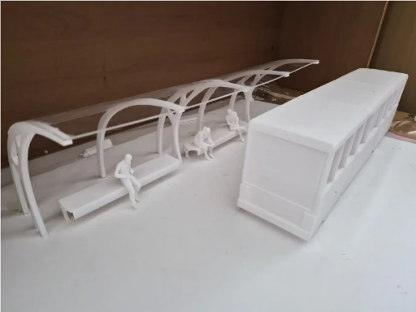
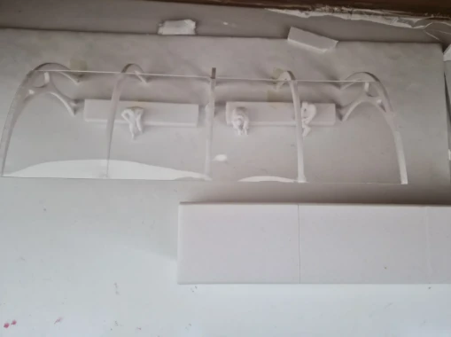
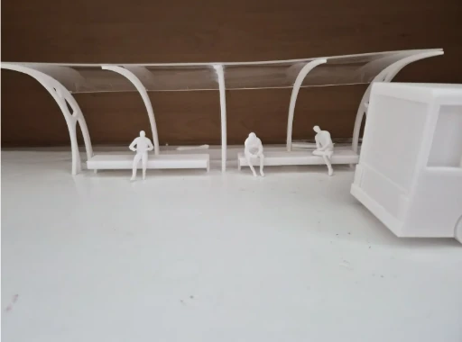
도시 안에서 완성되는
하나의 쉼터
모델링에서 확인한 형태와 구조를 서면의 실제 도시 맥락에 적용해, 거리와 자연스럽게 이어지는 공간을 제안했습니다.